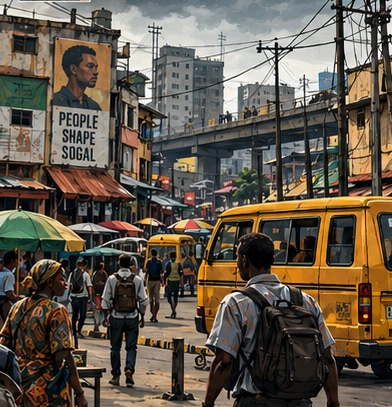
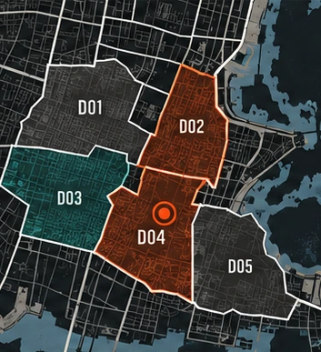

CHAPTER 01 / THE SIX-DAY BLACKOUT
SOGAL IS WATCHING.
DAY 01 / 06Six days to the city assembly
SOGAL / DISTRICT 04
SOLO WORLDTHE CITY DOESN’T WAIT.

BLACKOUT / ACTIVE CRISIS
CURRENT OBJECTIVERestore power. Keep the city together.
GRID UNSTABLE
ONE WORLD. FIVE PERSPECTIVES.EVERY DECISION CARRIES FORWARD.
CREW / 02
Simulated citizens · reactions follow your decisionsFIVE LIVES. ONE CITY.
CITY TRANSMISSIONSResponses to your latest move
DISTRICT CONTROL / 03
Inspect the places that carry your decisionsWHO HOLDS SOGAL?

FICTIONAL DISTRICT SCHEMATIC / NOT TO SCALEJOURNAL / 04